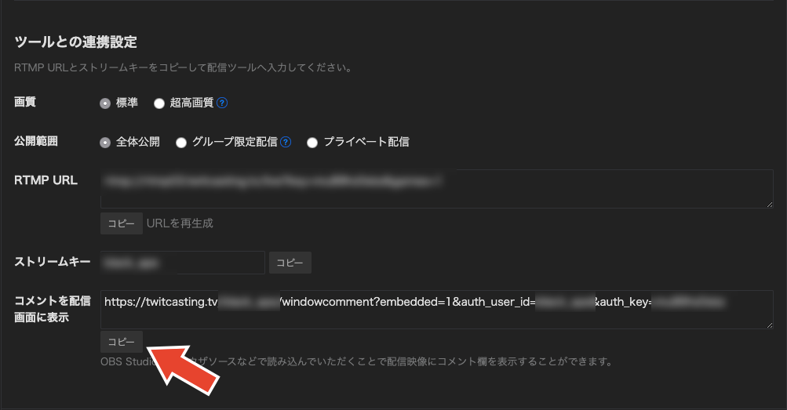
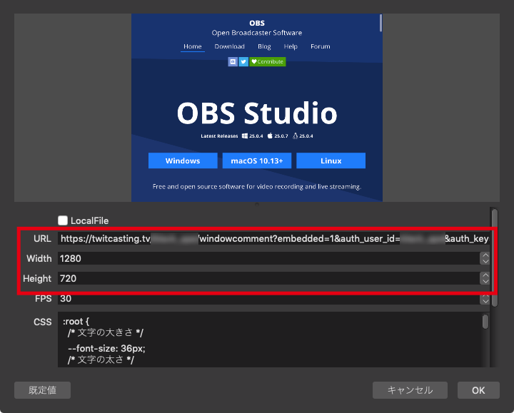
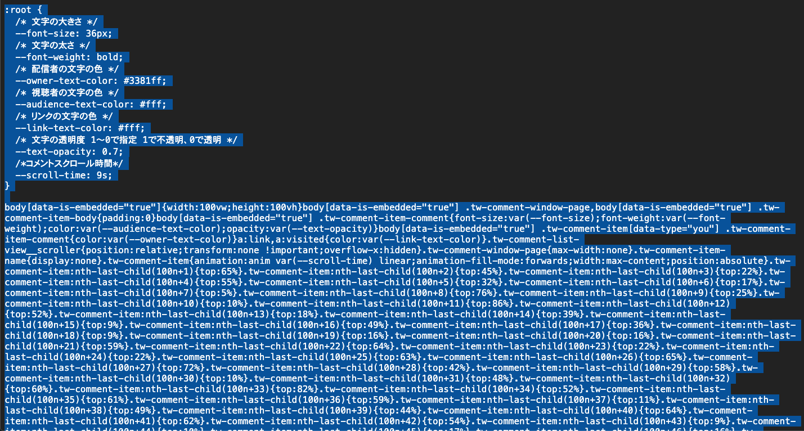
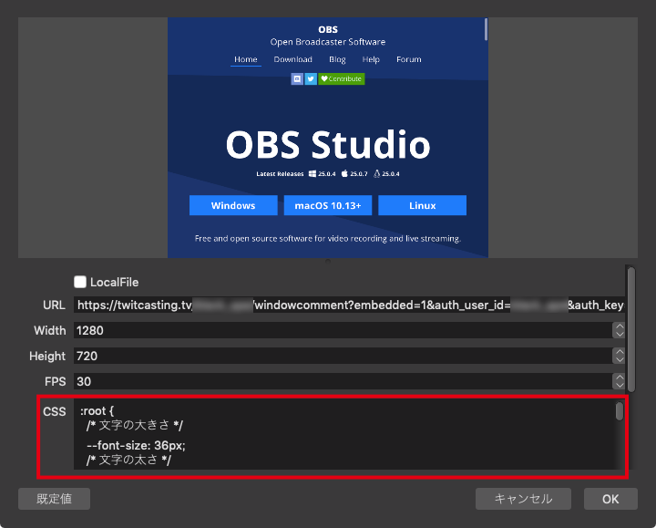

ツイキャスコメント表示用カスタムCSSたち
OBS等の配信ツールを使用しツイキャスのコメントを表示した際に使用可能なカスタムcssを公開しております。
使用は自己責任でお願いします。
このcssを利用する事によって生じたあらゆる不利益または損害に対して、製作者は、一切責任を負いません。
つかいかた
ツイキャスのツール配信画面を開き、矢印のボタンを押してURLをコピー。

OBSのシーンにBrowserSourceを追加。

BrowserSourceの設定を変更

・URL 先ほどコピーしたURLを貼り付け
・Width 1280
・Height 720
幅と高さはご自身の環境に合わせて適宜調整してください。
使用したいcssのページを開き、全てを選択してコピー。

cssに既に書かれているものがあれば削除し、先ほどコピーしたものを貼り付け。

カスタムCSSたち
横からスクロールしてくるやつ

ランダム版
上から順番版
※初期表示時から通算500コメントに到達するとコメントの位置が変わらない、流れてくる途中に入れ替わる等の現象が発生します。
cssの性質上、これ以上の対応は不可能です。